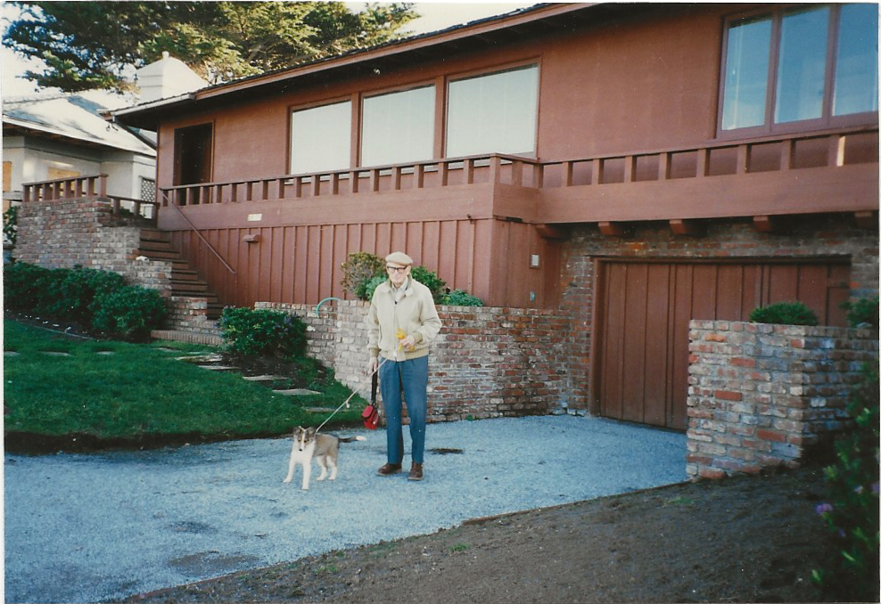

26177 Scenic Road
Carmel Point
Carmel-by-the-Sea, California
This home at 26177 Scenic Road was the longtime Carmel residence of Patricia Ford Crass and Richard R. Crass. Situated on scenic Carmel Point overlooking Carmel Bay, the home became the gathering place for three generations of the family. It was the setting for countless holidays, birthdays, family reunions, and visits with friends, creating many lasting memories.
The property enjoys panoramic views of Carmel Beach, Point Lobos, Pebble Beach, and the Pacific Ocean. Throughout the years, the home was carefully maintained and remodeled while preserving its warm coastal character. It holds many treasured memories for our family and remains an important part of our family history.

Scenic house before a major remodel in the 1980s.